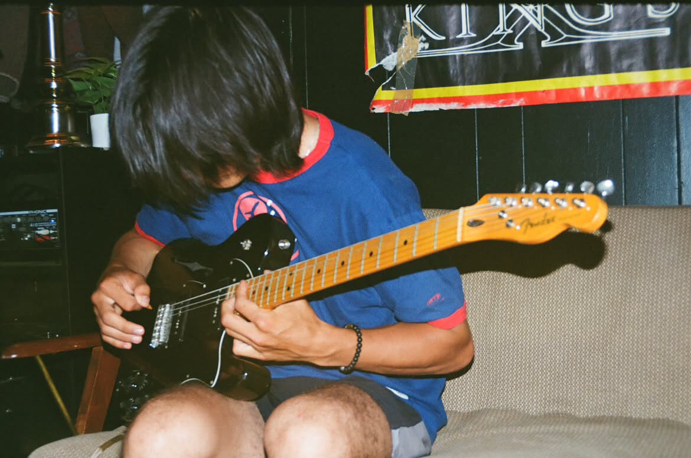

BEING IN A BAND CALLED
BEING IN A BAND CALLED

01 — HOW IT STARTED
Thirteen-plus people from the same high school kicking around the idea of starting a band. It narrowed down to four guys.
At the first practice, in a basement. A stovetop set off an actual gas leak in the house. The name wrote itself.
None of the original four knew how to play drums. We played our first show without one — then begged the drummer from the band before us on the bill to sit in for the set. Our future drummer was in the crowd of that show and joibed the band shortly after.
02 — THE OTHER HALF OF IT
This is my home workbench. My studies + work experience are the reason I've had the confidence to tinker with gear on the marketplace + pawn shops + thrift stores.
Fixing them meant relearning things I'd only ever had in theory: tracing a signal path, reading a schematic, understanding what's actually happening. It's the same instinct that now has me paying attention to gain staging in a DAW, and what a compressor is actually doing.


04 — THE LINEUP
Influenced by Interpol, Pixies, Radiohead, and jrock/shoegaze/second-wave/alt-rock genres. We rehearse and record at a space in downtown Hamilton.


05 — WHERE WE'VE PLAYED
06 — THE ARCHIVE
